Surrogacy agency
243Leads
$10.95Per lead
That is the whole spend, not a good week pulled out of it.
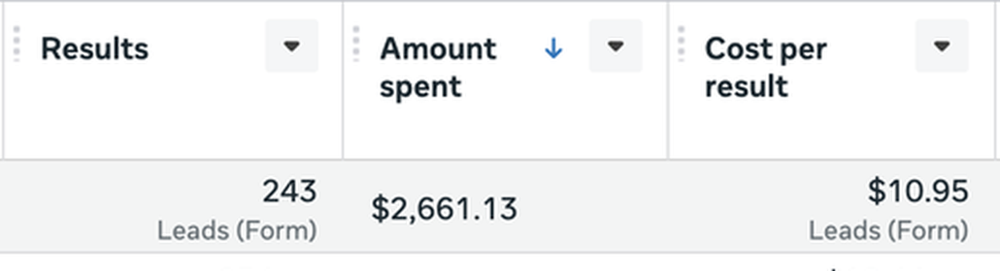
 Your call is confirmed
Your call is confirmed
Just over a minute. It covers what we do, so the call does not have to.
Click to skip to resultsThirty five to forty five minutes. Four things, in this order.
Most people booking this call have run something before. We want the part that did not work.
What a job is worth to you, and what you close. The maths only means something with your figures in it.
Some trades are harder than others. You will hear which one yours is.
You will not be followed up for a month afterwards. If it is not a fit, you will hear that from us plainly.
You do not need exact figures. Close enough is fine.
Client testimonials are being filmed this month. I'd rather show you numbers now and faces later.
Surrogacy agency
That is the whole spend, not a good week pulled out of it.

Barbershop
Five months on the same account. The cost per lead held the whole way.
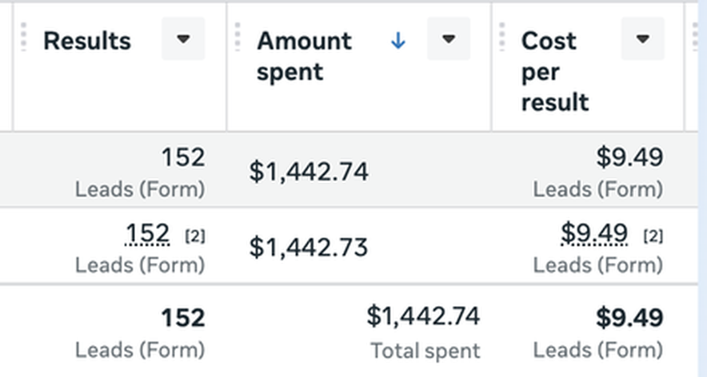
Chimney sweep
The going rate in this trade is twenty five to forty five a lead. This one sits under it.
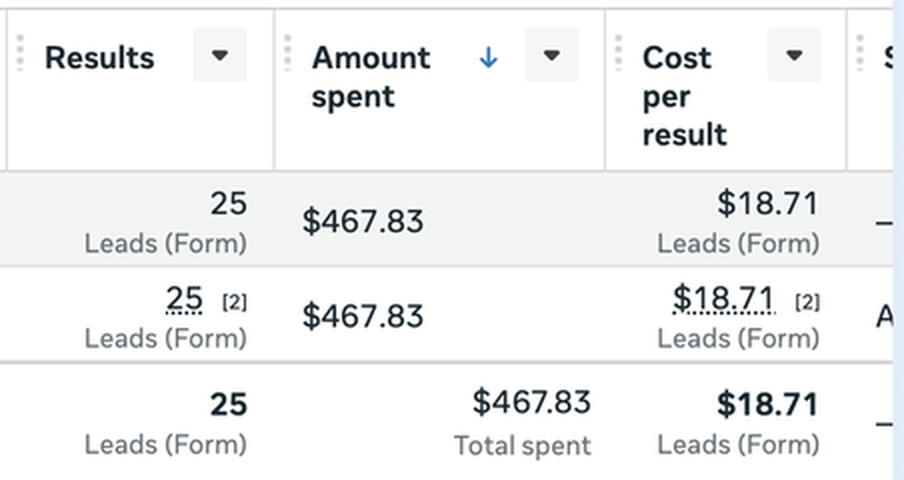
Landscaping
Nine leads is a small number and it is early. One of them closed inside the first week.
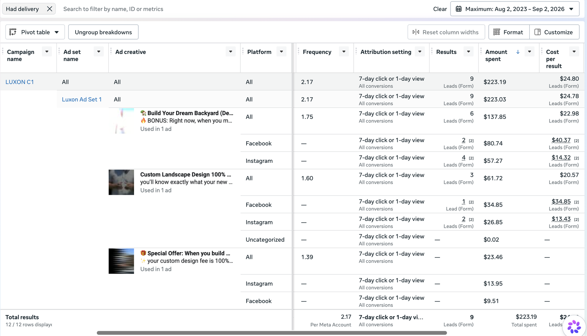
A form asking for an SMS code before it would submit. Half never came back to the tab. The ads were working the whole time.
Three quarters of the budget going to placements that had never produced a lead. Nobody had opened the placement breakdown.
A call that answered every question about price and timing, then ended with “give us a shout when you're ready.”
None of those needed better targeting or a bigger budget.
Anyone can put money behind a post. What decides whether it works is everything around it, and most of that happens before a dollar is spent.
Who is actually buying, what they have already tried, and the words they use when they call you. Written down before anything gets designed.
A hook is a specific checkable fact, not a claim. “Can't remember the last time you had it swept” makes someone stop and answer it in their head. “Quality service you can trust” asks nothing, so nothing happens.
Structure, budget and placements set so the system has room to learn. Plenty of accounts are built so it never gets the chance.
What Meta is told after the lead lands. This is the part almost nobody does, and it is the part that decides everything upstream of it.
Meta goes looking for more of whatever you tell it is good. Send it every lead and it finds you more of every lead, including the ones that waste your morning. Send it the ones that actually booked, and it goes looking for those.
That is what scaling on Meta actually is. Not a bigger budget.
Creative is shot on location at your jobs. Not stock.
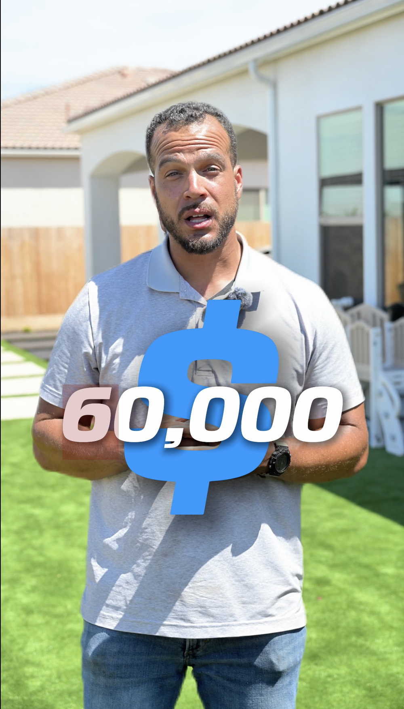
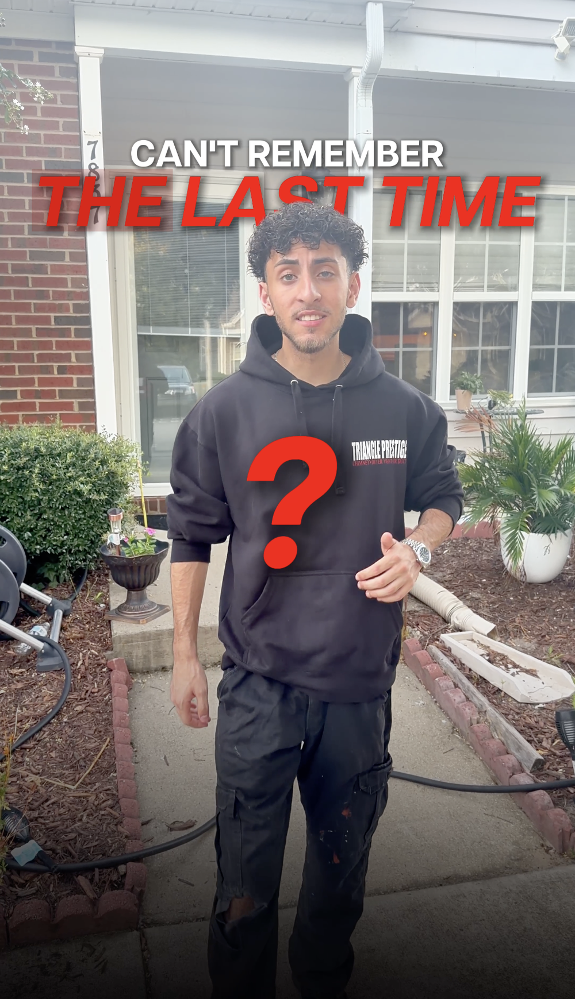
Conversion tracking is wired back to Meta, so the budget follows the ads that book work.
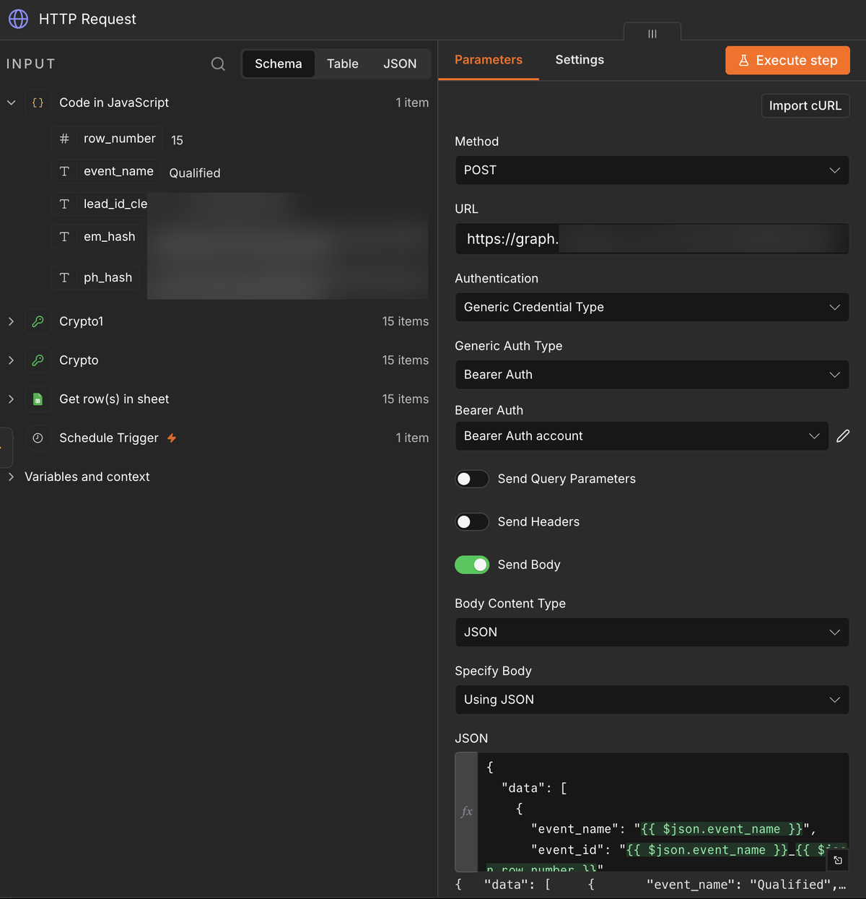
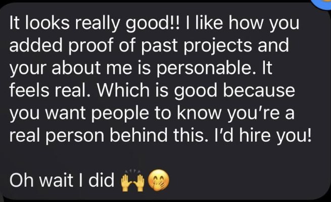
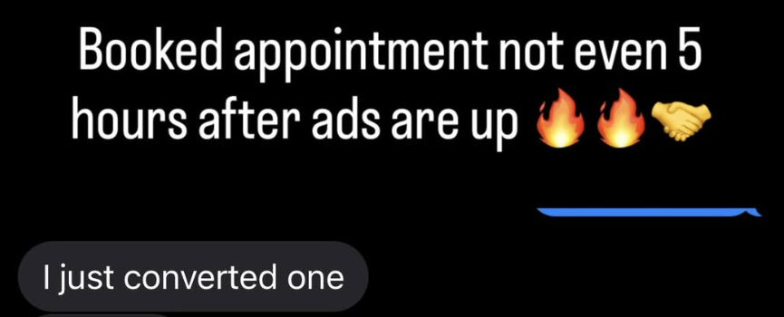
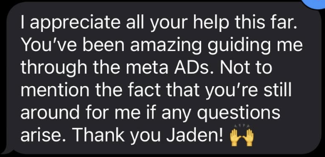
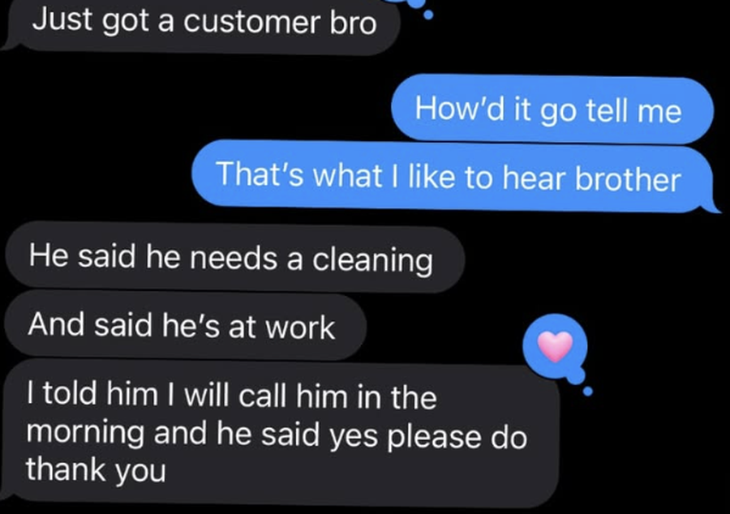
It is already in the diary. Nothing else to do before then.
If something comes up, move it rather than skipping it. The reschedule link is in your booking email.